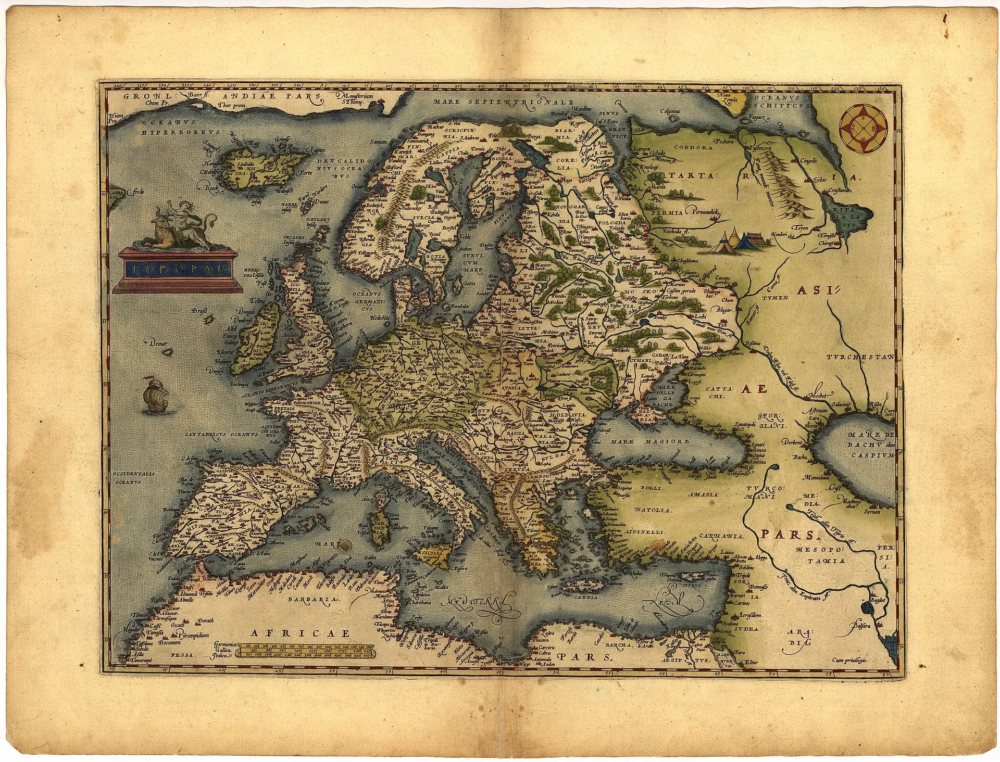
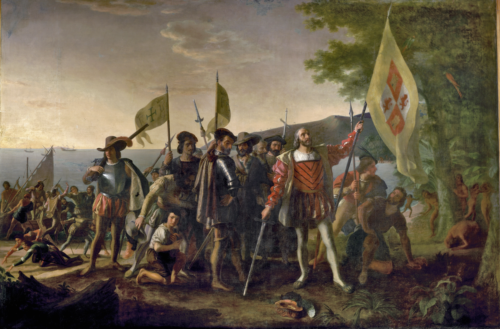
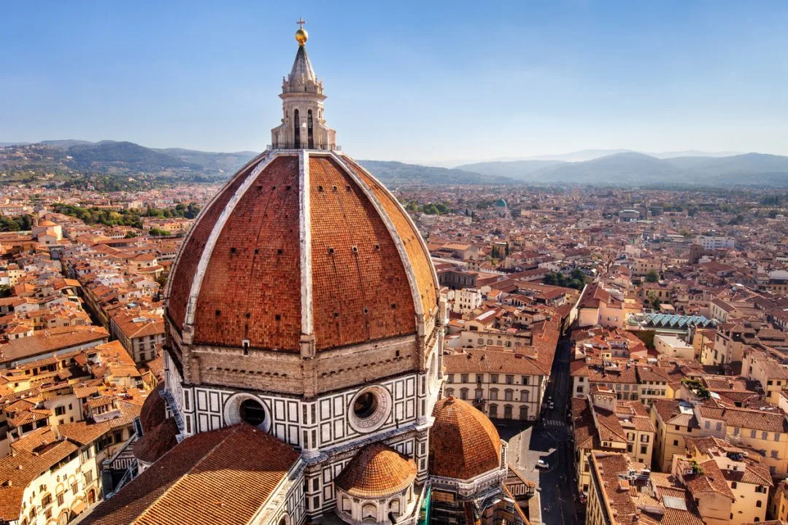
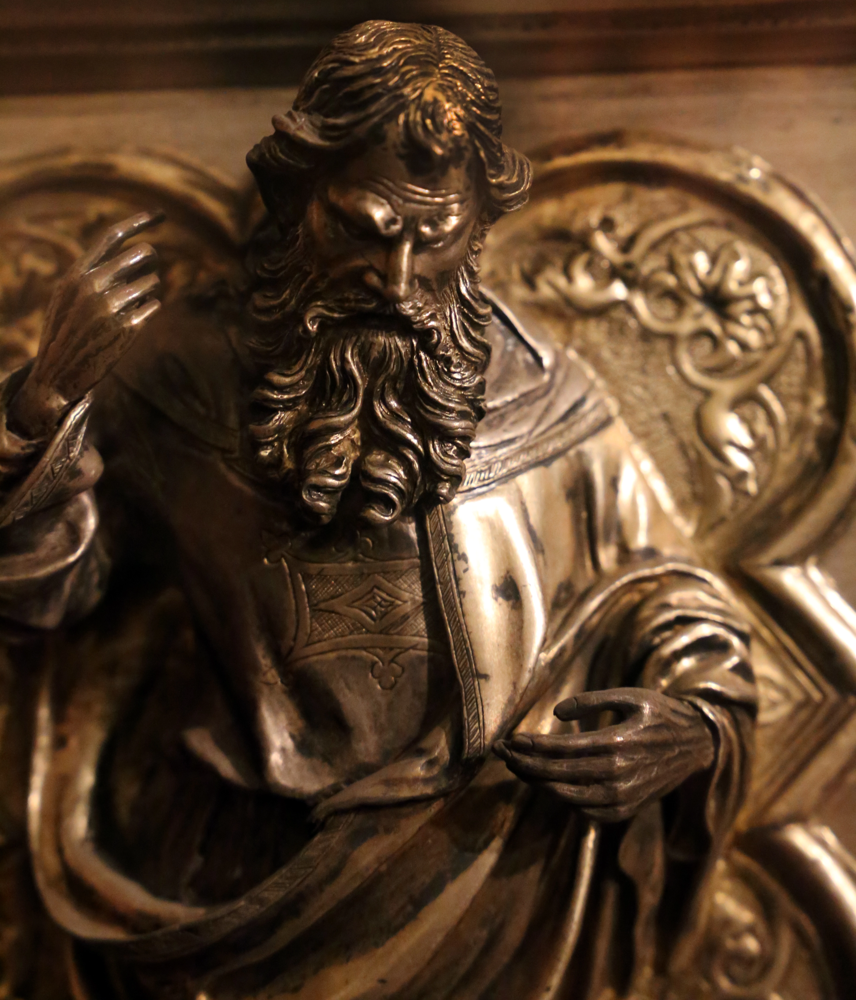
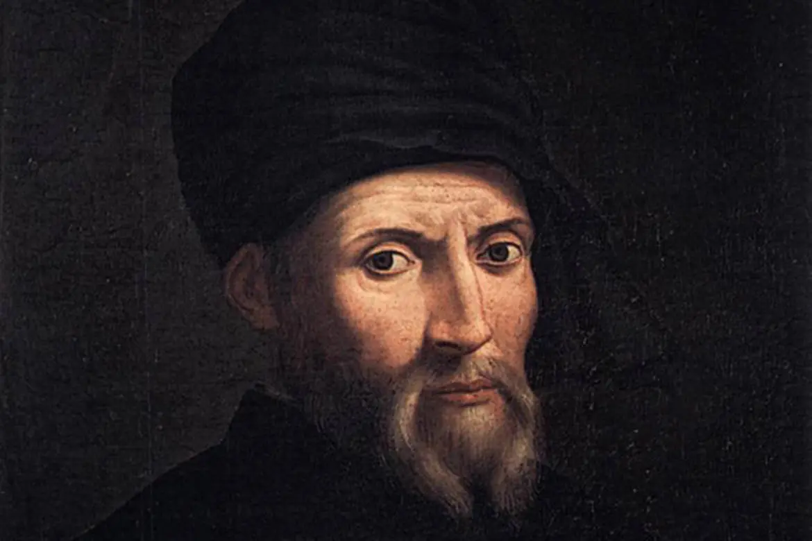
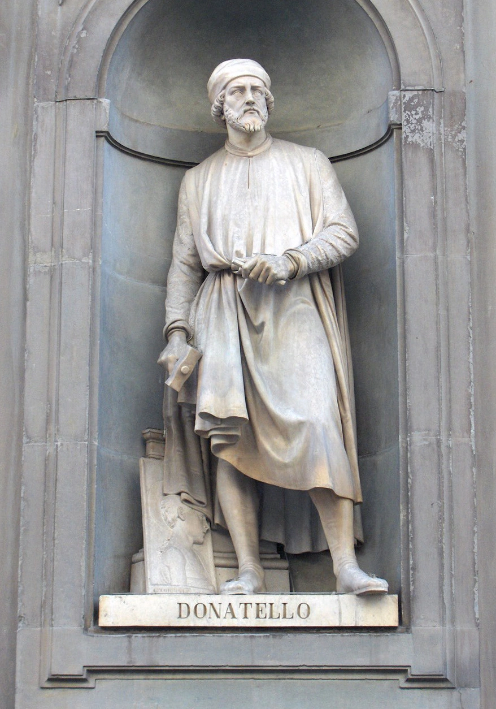
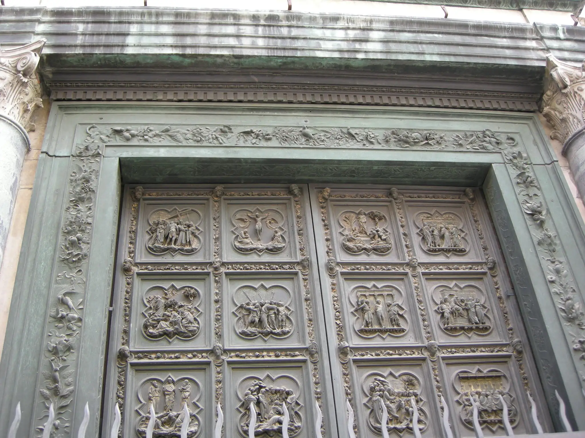
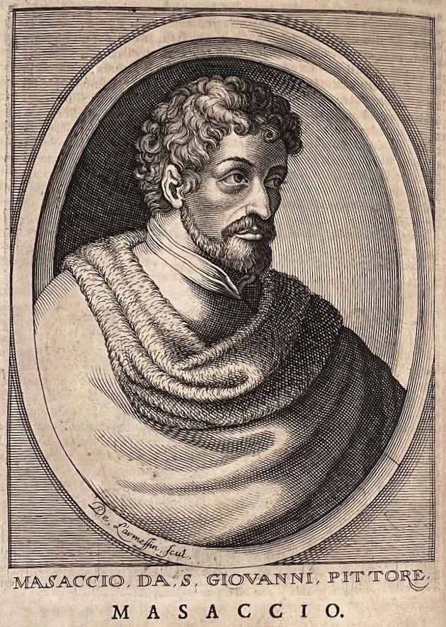

-
Contesto Storico
XV secoloFu un periodo di grandi sconvolgimenti economici, politici, religiosi e sociali.
Viene assunto come epoca di confine tra basso medioevo ed età moderna dalla maggior parte degli storiografi, sebbene con alcune differenze di datazione e di prospettiva.
Tra gli eventi di maggior rottura in ambito politico ci furono la questione orientale , segnata dall'espansione dell'Impero Ottomano e un'altra occidentale, caratterizzata dalla nascita degli Stati moderni, tra cui le monarchie nazionali di Francia, Inghilterra e Spagna, così come l'impero di Carlo V, che a differenza degli imperi medievali presenta un progetto di accentramento del potere, per quanto la rinascita dell'impero di Carlo V può essere vista anche come un ritorno alla dimensione sovranazionale che caratterizzava il Medioevo.

In ambito economico e sociale, con la scoperta del Nuovo Mondo, avvengono espansioni coloniali che allargano a dismisura l'orizzonte del mondo europeo.
Iniziano enormi trasformazioni in Europa, accompagnate da squilibri e contraddizioni, si fa spazio l'economia mercantile su scala mondiale, dall'altra le campagne restano legate a realtà tipiche dell'economia feudale.
Il fulcro del commercio si sposta inoltre dal Mar Mediterraneo verso il Nord Europa e l'Oceano Atlantico.

In ambito religioso avvenne la Riforma protestante, cioè lo scisma fra Chiesa cattolica e Chiesa protestante.
La Riforma intendeva rinnovare la Chiesa romana, stigmatizzandone le rilassatezze e le corruzioni come già in precedenza era accaduto in occasioni di vari tentativi di rinnovamento sia all'interno sia all'esterno della Chiesa stessa, ma finì per costituire una realtà indipendente non solo per l'intransigenza delle rispettive posizioni ideologiche, ma anche a causa dei risvolti politici con cui essa si intrecciò. -
Rinascimento Italiano
La diaspora degli intellettuali provenienti da Costantinopoli, dopo la conquista degli Ottomani, portò in Italia grandi personalità del mondo greco-bizantino, che insegnarono a Venezia, Firenze, Ferrara, Napoli e Milano. Si diffuse la conoscenza del greco e degli studi umanistici, grazie anche alle famiglie potenti dei Medici a Firenze, dei Malatesta a Rimini, degli Este a Ferrara, degli Sforza a Milano, dei Gonzaga a Mantova, dei duchi di Montefeltro a Urbino, dei nobili veneziani, della corte papale a Roma e dei d'Aragona a Napoli.

Rinascimento Firenze
Il rinnovamento culturale e scientifico iniziò tra il XIV secolo e il XV secolo a Firenze.
In città, in concomitanza con una fioritura economica , per quanto effimera, e con alcuni successi militari e politici, si aprì una stagione in cui i legami con le origini romane, per altro mai venute meno, vennero rinsaldati e produssero un linguaggio figurativo radicalmente diverso da quello allora preponderante del gotico internazionale.

Nel campo delle arti visive vissero contemporaneamente in città tre grandissimi maestri che rinnovarono in maniera irreversibile i linguaggi dell'architettura, della pittura e della scultura, rispettivamente Filippo Brunelleschi, Masaccio e Donatello.
Il cambiamento artistico non fu altro che un indicatore del cambiamento dei tempi e della mentalità. -
Brunelleschi
Firenze 1377Brunelleschi era figlio del notaio ser Brunellesco di Filippo Lapi e di Giuliana di Giovanni Spinelli. Crebbe in una famiglia agiata, che però non era imparentata con i nobili fiorentini Brunelleschi.
Suo padre era un professionista leale e stimato, che spesso venne incaricato di compiere ambascerie, come quella del 1364, quando fu nviato a Vienna a incontrare l'imperatore Carlo IV.
Ricevette una buona istruzione, apprendendo a leggere e a scrivere. Tramite lo studio dell'abaco poté apprendere e nozioni di matematica e geometria pratica che facevano parte del bagaglio conoscitivo di ogni buon mercante, comprese le nozioni di prospettiva, che a quell'epoca indicavano la pratica per calcolare misure e distanze inaccessibili con un rilevamento diretto.

Col tempo la sua cultura dovette arricchirsi delle materie del quadrivio , oltre che dalle letture personali e la conoscenza diretta di personaggi illustri, come Niccolò Niccoli, umanista e bibliofilo, e il politico Gregorio Dati.
In quegli anni nacque in lui anche l'interesse per la pittura e il disegno , che diventarono la sua principale inclinazione.
Il padre acconsentì alla scelta del figlio, senza insistere nel fargli seguire le sue orme negli studi giuridici, e lo mise a bottega da un amico di famiglia, dal quale imparò a fondere e gettare i metalli, a lavorare con il cesello, con lo sbalzo, con il niello, a praticare castoni di pietre preziose, smalti e rilievi ornamentali, ma soprattutto praticò approfonditamente il disegno, base per tutte le discipline artistiche. -
Donatello
Firenze 1386Nacque a Firenze nel 1386, figlio di Niccolò di Betto Bardi, cardatore di lana non imparentato con la famiglia comitale dei Bardi.
La sua era una famiglia modesta: il padre, irrequieto, condusse una vita tumultuosa, avendo partecipato prima alla rivolta dei Ciompi del 1378 e poi ad altre azioni contro Firenze, che lo portarono a essere condannato a morte e poi perdonato con il condono della pena; un carattere molto diverso da quel suo figliolo così minuto, signorile, elegante e delicato tanto da essere vezzeggiato con il nome di Donatello .
Secondo il Vasari, il giovane venne educato nella casa di Roberto Martelli.

La prima menzione documentata risale al 1401, quando a Pistoia venne segnalato per il fatto poco onorevole di aver picchiato un tedesco di nome Anichinus Pieri, procurandogli ferite piuttosto serie.
Ne seguì una condanna che in caso di reiterazione recidiva avrebbe portato a una salata multa in denaro.
Non si conoscono altri episodi di violenza che lo coinvolsero, anche se in numerosi aneddoti dei biografi è tramandato un temperamento piuttosto passionale.

La presenza in Pistoia potrebbe essere legata ai lavori del giovane Filippo Brunelleschi e della bottega di Lunardo di Mazzeo e Piero di Giovanni da Pistoia per l'altare di San Jacopo, magari nel ruolo di garzone apprendista.
Dal 1402, fino al 1404, fu a Roma con Brunelleschi, più anziano di lui di circa dieci anni, per studiare "l'antico".
Tra i due si andava instaurando un intenso rapporto di amicizia ed il soggiorno romano fu cruciale per le vicende artistiche di entrambi.
Essi poterono osservare i copiosi resti antichi, copiarli e studiarli per trarre ispirazione.

Le dicerie iniziarono presto a circolare e la coppia veniva chiamata per dileggio "quella del tesoro", poiché si pensava che scavassero alla ricerca di tesori sepolti, e in effetti in qualche occasione rinvennero materiali preziosi, come qualche cameo o pietra dura intagliata o, addirittura, una brocca piena di medaglie.
Nel 1404 Donatello era già tornato a Firenze da solo, per collaborare, nella bottega di Lorenzo Ghiberti, fino al 1407, alla creazione dei modelli in cera per la porta nord del Battistero. -
Masaccio
21 dicembre 1401, San Giovanni ValdarnoNacque a Castel San Giovanni da ser Giovanni di Mone Cassai, notaio, e da Jacopa di Martinozzo.
I due vivevano nella casa, ancora esistente a San Giovanni, del nonno paterno Simone, che era un prospero artigiano costruttore di casse lignee sia per uso domestico che commerciale.
Il padre doveva essere stato incoraggiato sin da piccolo all'attività notarile, facendogli studiare latino e procedura legale, se già a vent'anni, prendeva l'abilitazione per l'ufficio di notaio.

Nel 1406 il padre morì improvvisamente, a soli ventisette anni, e poco tempo dopo la moglie diede alla luce un secondo figlio, chiamato in onore dello scomparso padre, Giovanni, successivamente detto la Scheggia, che intraprese anche lui la carriera di pittore.
Qualche anno più tardi monna Jacopa si risposò con Tedesco di Mastro Feo, un ricco speziale anch'esso vedovo e con due figlie.
Il 17 agosto del 1417 morì Tedesco di Mastro Feo e Masaccio divenne il capofamiglia.
Per quanto riguarda la sua formazione, secondo il Berti (1989) egli si formò "verosimilmente nella fiorente a abbastanza modernista bottega di Bicci di Lorenzo; mentre il Boskovits (2001) pensa al cognato Mariotto di Cristofano e la Padoa Rizzo (2001) al per altro sconosciuto Niccolò di ser Lapo: tutte ipotesi che allo stato, in mancanza di documenti certi, rimangono tali. -
Michelangelo
(Caprese, 6 marzo 1475 – Roma, 18 febbraio 1564)Era uno scultore, pittore, architetto e poeta italiano.
Protagonista del Rinascimento italiano, già in vita fu riconosciuto dai suoi contemporanei come uno dei più grandi artisti di tutti i tempi.
Personalità tanto geniale quanto irrequieta, il suo nome è legato ad alcune delle più maestose opere dell'arte occidentale, fra cui si annoverano il David, il Mosè, la Pietà del Vaticano, la Cupola di San Pietro e il ciclo di affreschi nella Cappella Sistina, tutti considerati traguardi eccezionali dell'ingegno creativo.
Lo studio delle sue opere segnò le generazioni artistiche successive dando un forte impulso alla corrente del manierismo.
Read more -
Fine Rinascimento
1600La fine del Rinascimento avviene intorno al 1600 con l'avvento del Barocco.
Barocco, è il termine utilizzato per indicare una visione” culturale nata a Roma, che si esprime in diversi ambiti come la letteratura, la filosofia, l’arte e la musica.
L’età del Barocco, epoca di contraddizioni e di disagio sociale, vide decadere il razionale equilibrio che aveva dominato nell’epoca rinascimentale.
Il Rinascimento aveva significato risveglio creativo dopo la riflessione sul passato, quindi aveva segnato un periodo ci reale presa di coscienza da parte dell’uomo.